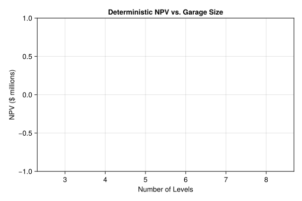
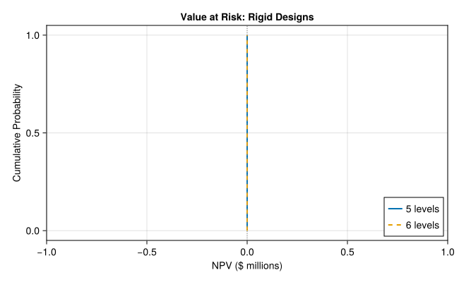
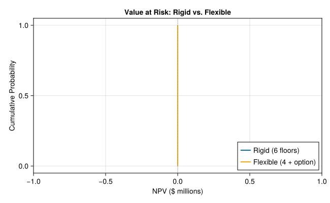

if !isfile("Manifest.toml")
import Pkg
Pkg.instantiate()
end
using CairoMakie
using DataFrames
using Distributions
using Random
using Statistics
Random.seed!(2026)Lab 9: Real Options & the Parking Garage
CEVE 421/521
1 Overview
In Monday’s lecture you saw how real options — the right, but not the obligation, to take an action in the future — can dramatically improve infrastructure design under uncertainty. The Tagus bridge reserved space for rail; the Bluewater parking garage reinforced its columns for future expansion. Both paid a small premium upfront to preserve flexibility.
In this lab you’ll build the parking garage model from Neufville et al. (2006) and discover three things:
- The deterministic optimum (build big) is wrong when demand is uncertain
- Uncertainty creates asymmetric payoffs that penalize over-building
- A flexible design with an expansion option dominates the rigid design on every metric
You’ll write all the code from scratch — good Julia practice.
Reference:
- Neufville et al. (2006) — the case study for this lab
2 Before Lab
Complete these steps BEFORE coming to lab:
Accept the GitHub Classroom assignment (link on Canvas)
Clone your repository:
git clone https://github.com/CEVE-421-521/lab-09-S26-yourusername.git cd lab-09-S26-yourusernameOpen the notebook in VS Code or Quarto preview
Run the first code cell — it will install any missing packages (may take 10-15 minutes the first time)
Submission: You will render this notebook to PDF and submit the PDF to Canvas. See Section 8 for details.
3 Setup
Run the cells in this section to load packages and define parameters. You don’t need to modify any of this code — just run it and read the comments.
3.1 Packages
3.2 Model Parameters
These parameters come from Neufville et al. (2006). We’ll use them throughout the lab.
# Demand
initial_demand = 750 # spaces on opening day
growth_rate = 0.08 # ~8%/year; calibrated so 6-floor garage is deterministic optimum
# Revenue and cost
revenue_per_space = 10_000 # $/year per space used
operating_cost_per_space = 2_000 # $/year per space available
land_lease = 3_600_000 # $/year
construction_cost_per_space = 16_000 # $ per space (ground level)
level_cost_increase = 1.10 # 10% more per level above ground
# Design
spaces_per_level = 200
max_levels = 8
# Economics
discount_rate = 0.12
horizon = 20 # years
# Uncertainty
volatility = 0.15 # annual demand volatility
# Flexibility
retrofit_premium = 1.10 # 10% extra cost for adding levels later4 Section 1: Deterministic NPV
First, let’s compute the net present value (NPV) of a parking garage assuming we know future demand perfectly. This is standard engineering economics.
4.1 Deterministic Demand
The forecast assumes demand grows exponentially from 750 spaces:
\[D(t) = D_0 \cdot e^{g \cdot t}\]
where \(D_0 = 750\) and \(g = 0.08\)/year (approximately 8% annual growth).
demand_deterministic = [initial_demand * exp(growth_rate * t) for t in 1:horizon]4.2 Implement calculate_npv
Write a function that computes the NPV of a rigid (fixed-size) parking garage.
The key equations are:
- Capacity =
n_levels × 200spaces - Construction cost = \(\sum_{l=1}^{n} 16{,}000 \times 200 \times 1.1^{(l-1)}\)
- Annual revenue = \(\min(D(t),\; \text{capacity}) \times \$10{,}000\)
- Annual operating cost = \(\text{capacity} \times \$2{,}000 + \$3{,}600{,}000\)
- NPV = \(-\text{construction cost} + \sum_{t=1}^{20} \frac{\text{revenue}(t) - \text{operating cost}}{(1 + r)^t}\)
Your task: replace the return 0.0 placeholder with the actual NPV calculation using the equations above.
"""
calculate_npv(n_levels, demand)
Compute the NPV of a rigid parking garage with `n_levels` levels,
given a demand trajectory `demand` (a vector of length `horizon`).
Returns the NPV in dollars.
"""
function calculate_npv(n_levels, demand)
return 0.0 # TODO: replace this with your implementation
endMain.Notebook.calculate_npv4.3 Sweep Garage Sizes
Compute the deterministic NPV for garages with 3 to 8 levels and plot the results.
levels_range = 3:8
npvs_deterministic = [calculate_npv(n, demand_deterministic) for n in levels_range]let
fig = Figure(; size=(600, 400))
ax = Axis(
fig[1, 1];
xlabel="Number of Levels",
ylabel="NPV (\$ millions)",
title="Deterministic NPV vs. Garage Size",
xticks=collect(levels_range),
)
barplot!(ax, collect(levels_range), npvs_deterministic ./ 1e6; color=:steelblue)
fig
end
Checkpoint: Your 6-floor NPV should be approximately $10.8M and 6 floors should be the optimal size. If your numbers are significantly different, double-check your construction cost and discounting.
5 Section 2: Demand Uncertainty
The deterministic forecast assumes we know the future perfectly. In reality, demand could be much higher or lower than projected. Let’s see what happens when we account for this uncertainty.
5.1 Implement simulate_demand
Model demand as a geometric Brownian motion (GBM):
\[D_{t+1} = D_t \cdot \exp\!\left[\left(\mu - \frac{\sigma^2}{2}\right) + \sigma\,\varepsilon_t\right], \quad \varepsilon_t \sim \mathcal{N}(0,1)\]
where \(\mu\) = growth_rate (the same 0.08 from Section 1) and \(\sigma\) = volatility (0.15).
The \(-\sigma^2/2\) correction ensures that the expected demand path matches the deterministic trajectory from Section 1. Without it, the average of many GBM paths would drift above the deterministic forecast.
Your task: replace the placeholder with a loop that generates the GBM trajectory.
"""
simulate_demand(n_years; mean_growth_rate, volatility, initial_demand)
Simulate one demand trajectory of length `n_years` using geometric Brownian motion.
Returns a vector of demand values for years 1 through `n_years`.
"""
function simulate_demand(
n_years; mean_growth_rate=growth_rate, σ=volatility, D₀=initial_demand
)
# TODO: replace this with your GBM implementation
return [D₀ * exp(mean_growth_rate * t) for t in 1:n_years] # deterministic placeholder
endMain.Notebook.simulate_demand5.2 Monte Carlo Simulation
Generate 2,000 demand trajectories and compute the NPV for each garage size under each trajectory.
n_scenarios = 2_000
demand_scenarios = [simulate_demand(horizon) for _ in 1:n_scenarios]
# Compute NPV for each scenario and each garage size
npv_results = DataFrame(;
scenario=repeat(1:n_scenarios; inner=length(levels_range)),
n_levels=repeat(collect(levels_range); outer=n_scenarios),
npv=Float64[
calculate_npv(n, demand_scenarios[s]) for s in 1:n_scenarios for
n in levels_range
],
)# Compute ENPV for each garage size
enpv_by_size = combine(groupby(npv_results, :n_levels), :npv => mean => :enpv)
println("Expected NPV by garage size:")
for row in eachrow(enpv_by_size)
println(" $(row.n_levels) levels: \$$(round(row.enpv / 1e6; digits=2))M")
endExpected NPV by garage size:
3 levels: $0.0M
4 levels: $0.0M
5 levels: $0.0M
6 levels: $0.0M
7 levels: $0.0M
8 levels: $0.0MCheckpoint: The 6-floor ENPV should be approximately $5.8M. The 5-floor ENPV should be approximately $6.6M — noticeably higher. Your exact numbers will vary with the random seed, but 5 floors should beat 6.
5.3 VaR Curves
Plot the cumulative distribution of NPV for the 5- and 6-floor designs. This is the Value at Risk (VaR) curve — it shows the probability that NPV falls below any given threshold.
let
npv_5 = sort(npv_results[npv_results.n_levels .== 5, :npv])
npv_6 = sort(npv_results[npv_results.n_levels .== 6, :npv])
probs = range(0; stop=1, length=n_scenarios)
fig = Figure(; size=(650, 400))
ax = Axis(
fig[1, 1];
xlabel="NPV (\$ millions)",
ylabel="Cumulative Probability",
title="Value at Risk: Rigid Designs",
)
lines!(ax, npv_5 ./ 1e6, probs; label="5 levels", linewidth=2)
lines!(ax, npv_6 ./ 1e6, probs; label="6 levels", linewidth=2, linestyle=:dash)
vlines!(ax, [0]; color=:gray, linestyle=:dot, linewidth=1)
axislegend(ax; position=:rb)
fig
end
6 Section 3: The Flexible Design
What if you could build small now and expand later — but only if demand justifies it? That’s a real option: the right, but not the obligation, to add capacity in the future.
The premium: reinforce the columns during initial construction so that additional levels can be added later. This costs 10% more per space for the initial levels, but lets you defer the decision to expand.
6.1 Implement simulate_flexible_garage
Write a function that simulates a flexible garage with an expansion rule.
The expansion rule:
Each year, if occupancy (demand / current capacity) exceeds
expand_threshold(default 80%), add one level. Each added level costs \(16{,}000 \times 200 \times 1.1^{(l-1)} \times 1.1\), where \(l\) is the level number being added and the extra \(\times 1.1\) is the retrofit premium. Maximum total levels =max_levels.
Initial construction cost includes the retrofit premium on all initial levels:
\[\text{Initial cost} = \sum_{l=1}^{n_0} 16{,}000 \times 200 \times 1.1^{(l-1)} \times 1.1\]
Your task: replace the placeholder with the expansion logic. You’ll need to track current_levels and capacity as they change over time.
"""
simulate_flexible_garage(initial_levels, demand_trajectory; expand_threshold=0.8, n_max=max_levels)
Simulate a flexible parking garage that starts with `initial_levels` levels
and can expand by one level per year when occupancy exceeds `expand_threshold`.
Returns a NamedTuple with fields:
- `npv`: net present value
- `final_levels`: number of levels at end of horizon
- `expansions`: number of times the garage was expanded
"""
function simulate_flexible_garage(
initial_levels,
demand_trajectory;
expand_threshold=0.8,
n_max=max_levels,
)
# TODO: replace this with your implementation
# Hint: start by computing the initial construction cost (with retrofit premium),
# then loop over years. Each year, check if occupancy > threshold and expand if so.
npv = calculate_npv(initial_levels, demand_trajectory) # placeholder: ignores flexibility
return (; npv, final_levels=initial_levels, expansions=0)
endMain.Notebook.simulate_flexible_garage6.2 Compare Rigid vs. Flexible
Run 2,000 scenarios for the flexible 4-floor garage and compare against the rigid 6-floor design.
flexible_results = map(demand_scenarios) do d
simulate_flexible_garage(4, d)
end
flexible_npvs = [r.npv for r in flexible_results]
rigid_npvs = npv_results[npv_results.n_levels .== 6, :npv]Build the comparison table:
comparison = DataFrame(;
Metric=[
"Initial investment (\$M)",
"ENPV (\$M)",
"5th percentile NPV (\$M)",
"99.5th percentile NPV (\$M)",
],
Rigid_6_floors=[
round(
sum(
construction_cost_per_space * spaces_per_level * level_cost_increase^(l - 1)
for l in 1:6
) / 1e6;
digits=2,
),
round(mean(rigid_npvs) / 1e6; digits=2),
round(quantile(rigid_npvs, 0.05) / 1e6; digits=2),
round(quantile(rigid_npvs, 0.995) / 1e6; digits=2),
],
Flexible_4_plus_option=[
round(
sum(
construction_cost_per_space *
spaces_per_level *
level_cost_increase^(l - 1) *
retrofit_premium for l in 1:4
) / 1e6;
digits=2,
),
round(mean(flexible_npvs) / 1e6; digits=2),
round(quantile(flexible_npvs, 0.05) / 1e6; digits=2),
round(quantile(flexible_npvs, 0.995) / 1e6; digits=2),
],
)
comparison4×3 DataFrame
| Row | Metric | Rigid_6_floors | Flexible_4_plus_option |
|---|---|---|---|
| String | Float64 | Float64 | |
| 1 | Initial investment ($M) | 24.69 | 16.34 |
| 2 | ENPV ($M) | 0.0 | 0.0 |
| 3 | 5th percentile NPV ($M) | 0.0 | 0.0 |
| 4 | 99.5th percentile NPV ($M) | 0.0 | 0.0 |
6.3 VaR Comparison
Plot the VaR curves for rigid and flexible designs on the same axes.
let
rigid_sorted = sort(collect(rigid_npvs))
flexible_sorted = sort(flexible_npvs)
probs = range(0; stop=1, length=n_scenarios)
fig = Figure(; size=(650, 400))
ax = Axis(
fig[1, 1];
xlabel="NPV (\$ millions)",
ylabel="Cumulative Probability",
title="Value at Risk: Rigid vs. Flexible",
)
lines!(ax, rigid_sorted ./ 1e6, probs; label="Rigid (6 floors)", linewidth=2)
lines!(
ax,
flexible_sorted ./ 1e6,
probs;
label="Flexible (4 + option)",
linewidth=2,
color=:orange,
)
vlines!(ax, [0]; color=:gray, linestyle=:dot, linewidth=1)
axislegend(ax; position=:rb)
fig
end
7 Wrap-Up
Key takeaways:
- The deterministic optimum can be wrong — uncertainty changes the best decision because payoffs are asymmetric (capped upside, uncapped downside from over-building)
- Flexibility has quantifiable value — the option to expand shifts the entire VaR curve rightward: less downside, more upside, lower initial cost
- A real option is a policy with a rule — “expand when occupancy > 80%” is a simple policy mapping an observation (current occupancy) to an action (expand or not) via a parameter (the threshold)
- Connection to the lecture — this expansion rule is exactly the kind of policy Monday’s lecture calls “direct policy search”: a parameterized mapping from observable information to actions, evaluated across many uncertain scenarios
8 Submission
Write your answers in the response boxes above.
Render to PDF:
- In VS Code: Open the command palette (
Cmd+Shift+P/Ctrl+Shift+P) → “Quarto: Render Document” → select Typst PDF - Or from the terminal:
quarto render index.qmd --to typst
- In VS Code: Open the command palette (
Submit the PDF to the Lab 9 assignment on Canvas.
Push your code to GitHub (for backup):
git add -A && git commit -m "Lab 9 complete" && git push
Checklist
Before submitting:
References
Neufville, R. de, Scholtes, S., & Wang, T. (2006). Real options by spreadsheet: Parking garage case example. Journal of Infrastructure Systems, 12(2), 107–111. https://doi.org/10.1061/(asce)1076-0342(2006)12:2(107)